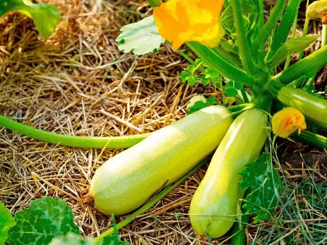
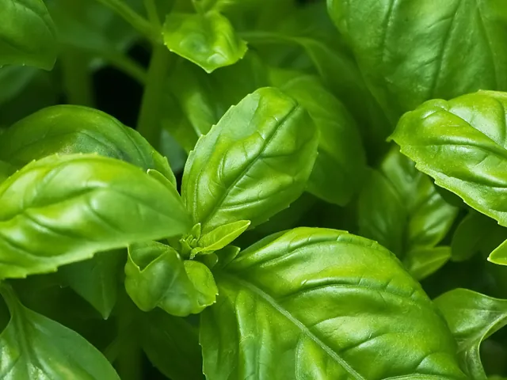
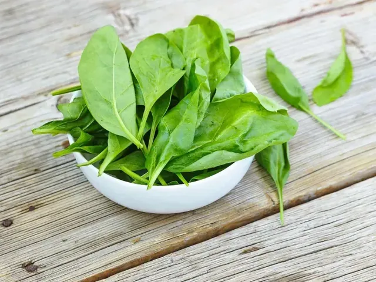
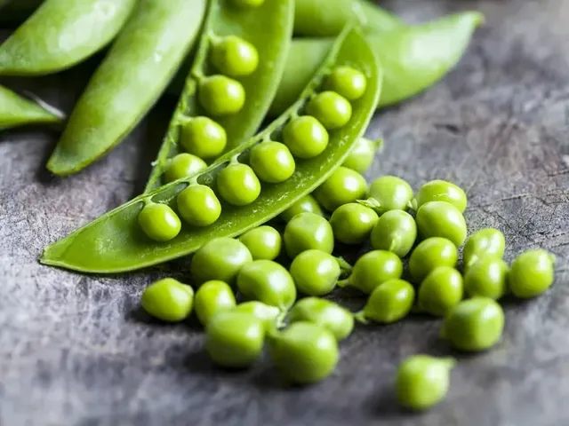
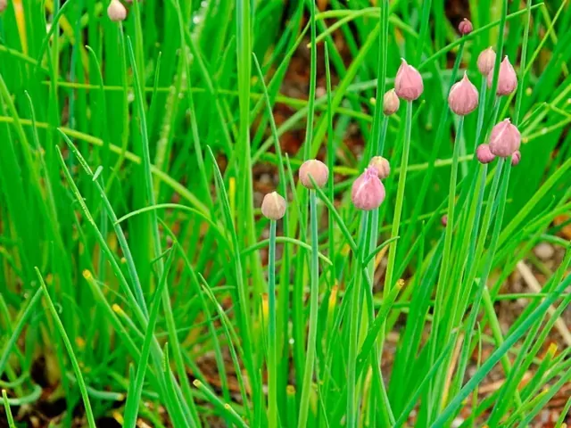
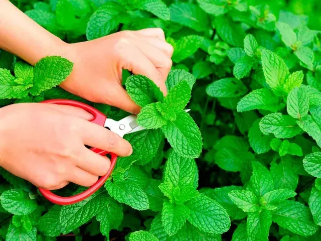
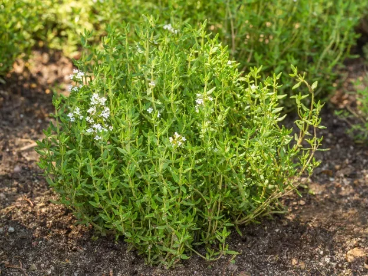
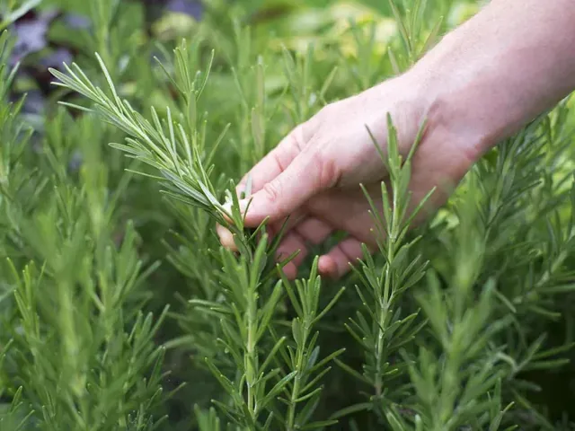

Aprila se delo na vrtu pospeši, a vreme ostaja spremenljivo. Mlade setve potrebujejo vlago, sadike pa postopno privajanje na sonce, veter in nižje temperature. V osrednji Sloveniji s toploljubnimi rastlinami ne hitite na prosto: topel dan še ne zagotavlja dovolj toplih noči ali ogrete zemlje. Baziliko in občutljive zelenjavne sadike ohranite na zaščitenem, svetlem mestu do primernih razmer. Na balkonu pripravite odcedne posode in razpored prilagodite dejanskemu soncu. Trpežnejša zelišča lahko sadite glede na njihovo odpornost ter vremensko napoved, pri rastlinah iz tople trgovine pa upoštevajte tudi potrebo po utrjevanju.
Setev na toplem aprila

Solata
Sejte v manjših presledkih, da boste pridelek pobirali postopoma. V vročini izberite delno senco in skrbite za enakomerno vlažno zemljo.

Paradižnik
Sadike presadite na prosto po nevarnosti pozebe. Visokim sortam pripravite oporo. Zalivajte pri tleh in omogočite zračenje med rastlinami.

Bučka
Posadite jo v rodovitno zemljo, ko mine nevarnost pozebe. Pustite dovolj prostora. Mlade plodove redno pobirajte in zalivajte neposredno ob koreninah.

Bazilika
Začnite s sadiko ali vzgojo na toplem. Na balkon jo prestavite po nevarnosti pozebe. Pobirajte vršičke nad parom listov in odstranjujte cvetne nastavke, da se rastlina razveji.
Setev ali sajenje na prosto aprila
Solata
Sejte v manjših presledkih, da boste pridelek pobirali postopoma. V vročini izberite delno senco in skrbite za enakomerno vlažno zemljo.

Korenje
Sejte neposredno v rahlo zemljo brez večjih kamnov. Do vznika ohranjajte površino vlažno, pregoste rastlinice pa previdno razredčite.

Redkvica
Najlepše raste v hladnejšem delu leta. Sejte redko in redno zalivajte; korene pobirajte mlade, preden postanejo oleseneli.

Špinača
Ustreza ji hladnejše vreme in rodovitna, vlažna tla. Poleti hitro uide v cvet. Zunanje liste lahko pobirate postopoma.

Grah
Sejte zgodaj, ko je zemlja primerna za obdelavo in ni razmočena. Višjim sortam postavite mrežo ali veje. Stroke pobirajte, ko so zrna še nežna.

Por
Sadike prestavite na pripravljeno gredo in jih redno zalivajte. Sorte se razlikujejo po odpornosti na mraz in času pobiranja; preverite navodila izbrane sorte.
Peteršilj
Uporabite vsaj 20 cm globoko posodo. Pri setvi bodite potrpežljivi: vznik je počasen, površina pa naj ostaja enakomerno vlažna. Pobirajte zunanje liste in ohranite sredico rastline.

Drobnjak
Najlažje začnete s sadiko ali razdeljenim šopom. Liste režite nekaj centimetrov nad zemljo. V posodi ohranjajte zmerno vlago; uveljavljeno rastlino lahko pobirate večkrat.

Meta
Meta se močno razrašča, zato jo gojite v lastni posodi. Poskrbite za vlago in odtok vode. Mlade vršičke pobirajte sproti; presajanje v večjo posodo prilagodite rasti korenin.

Timijan
Posadite sadiko v dobro odceden substrat. Timijan ne mara stalno mokre zemlje. Poganjke režite zmerno in ne globoko v star les. Posodo pozimi zaščitite pred dolgotrajno mokroto.

Rožmarin
Začnite s sadiko in uporabite odceden substrat ter lonec z odtočnimi luknjami. Med zalivanji naj se površina nekoliko osuši. V mrzlih legah posodo prezimite na svetlem, hladnem mestu brez hudega mraza.
Okvirno pobiranje aprila
Redkvica
Pobirajte dovolj razvite rastline. Čas je odvisen od sorte ter datuma setve ali sajenja.
Špinača
Pobirajte dovolj razvite rastline. Čas je odvisen od sorte ter datuma setve ali sajenja.
Drobnjak
Pobirajte dovolj razvite rastline. Čas je odvisen od sorte ter datuma setve ali sajenja.
Rožmarin
Pobirajte dovolj razvite rastline. Čas je odvisen od sorte ter datuma setve ali sajenja.
Na kaj bodite pozorni aprila
- Sadike najprej postavite za krajši čas v zavetje, nato čas zunaj postopno podaljšujte.
- Pred sajenjem preverite odtočne odprtine loncev in uporabite substrat, primeren izbranim rastlinam.
- Meta naj raste v svoji posodi, saj se hitro razrašča in lahko izrine druge rastline.
- Ob napovedanem mrazu občutljive sadike prestavite v zaščiten prostor; samo sončna lega ne prepreči pozebe.
Informativni vodnik za osrednjo Slovenijo. Termine, velikost posode in razmike prilagodite sorti, vremenu in navodilom dobavitelja. Podatki niso napoved dejanskega datuma pobiranja.
Ljudsko izročilo aprila
»Ena lastovka še ne prinese pomladi.«
Pred presajanjem toploljubnih sadik spremljajte nočne temperature in večdnevno napoved, ne le enega sončnega popoldneva.
»Kar seješ, to žanješ.«
Zapišite sorto in datum setve. Ob pobiranju boste lažje primerjali, kaj se je na vašem vrtu ali balkonu dobro obneslo.
Pregovori so kulturno izročilo, ne vremenska napoved. Preberite razlage pregovorov ali odprite godove za april.